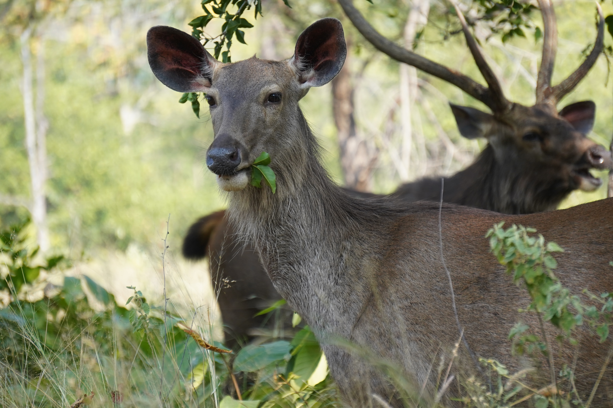

| Animal Name | Scientific Name | Interesting Facts | Image |
|---|---|---|---|
| Sri Lankan Sambar Deer | Rusa unicolor | The Sri Lankan Sambar Deer is the largest deer species in Sri Lanka and is known for its distinctive antlers. It is an important prey species for the Sri Lankan leopard |  |
| Sri Lanka Blue Magpie | Urocissa ornata | he Sri Lanka Blue Magpie is a striking bird with a long tail and a bright blue body. It is endemic to Sri Lanka and is known for its intelligence and social behavior | |
| Sri Lankan Leopard | Panthera pardus kotiya | The Sri Lankan leopard is a subspecies of leopard found only in Sri Lanka. It is the largest predator in Sri Lanka and is known for its ability to climb trees | |
| Sloth Bear | Melursus ursinus | The sloth bear, found in Sri Lanka and India, is the only bear species that feeds almost entirely on insects, especially termites and ants |  |